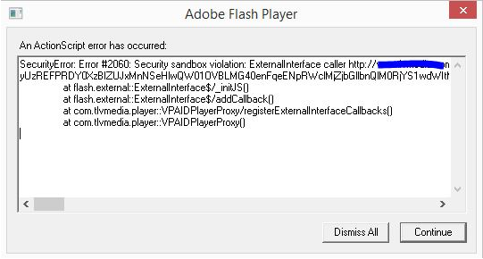

Отладочный Flash Player для разработчиков и тестеровщиков, который во время выполнения приложения показывает место происхождения ошибки в приложении.
Официальный сайт: https://www.adobe.com/support/flashplayer/debug_downloads.html
Включение отладчика содержимого Flash Player Content Debugger в Google Chrome

Created with the Personal Edition of HelpNDoc: iPhone web sites made easy